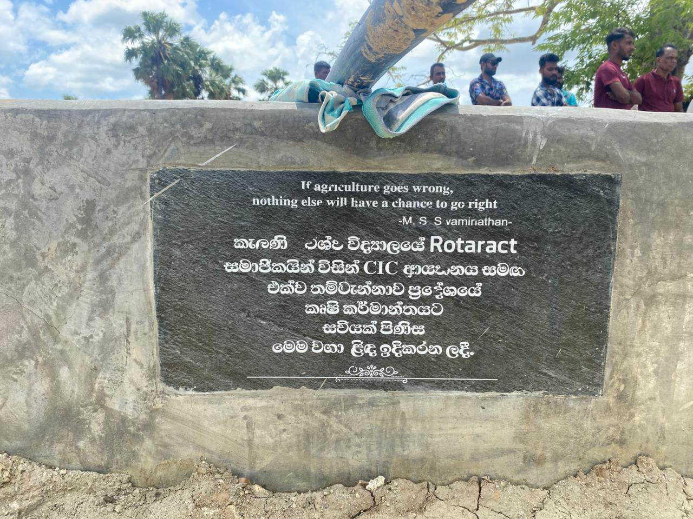
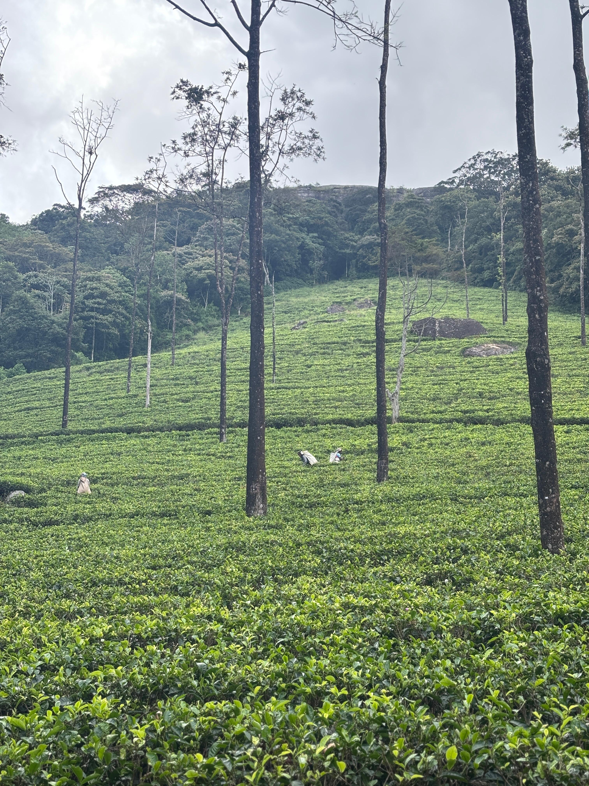
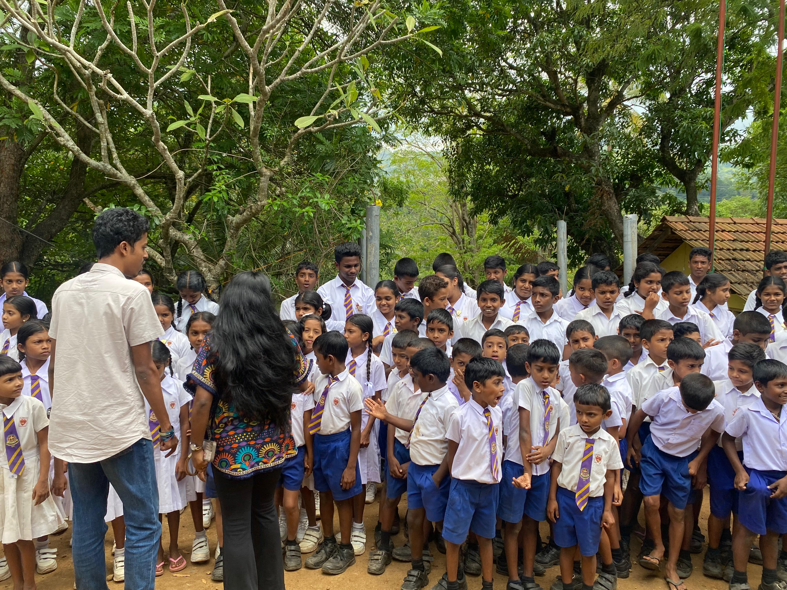
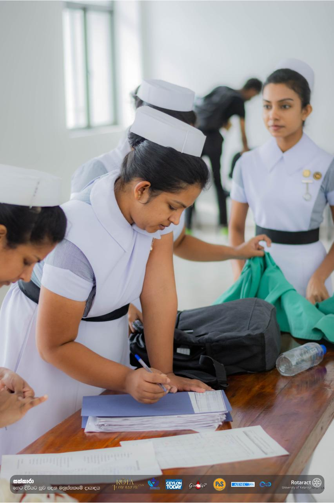
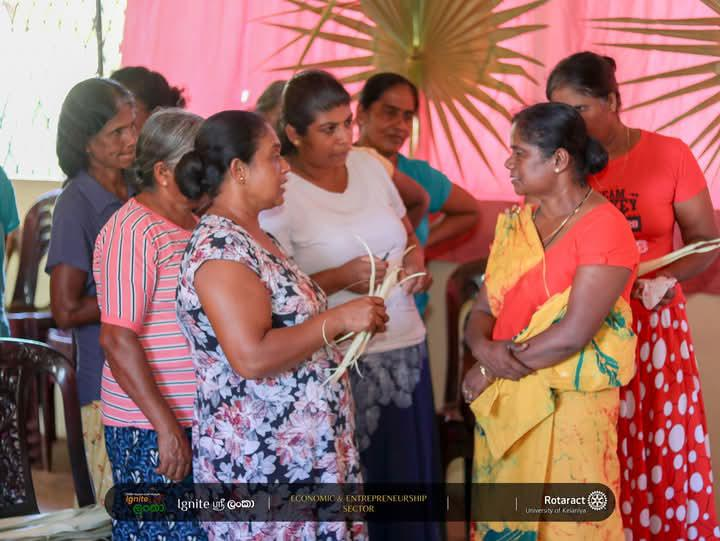
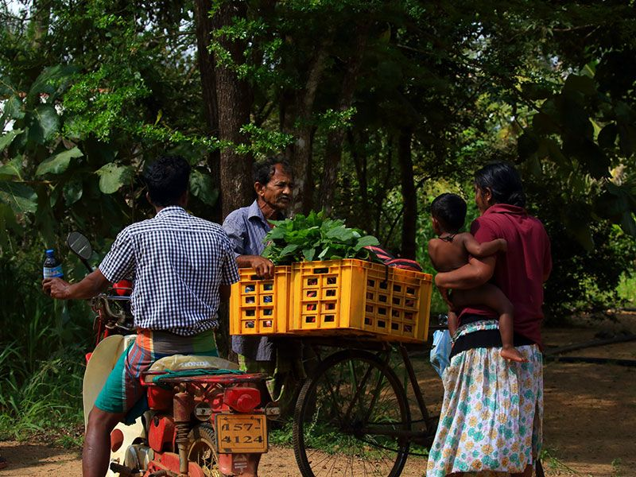

We have focused on key infrastructure development initiatives in Dampola village. As part of this effort, we successfully installed a plumbing system at Hapuwala Junior School, ensuring students have access to clean and safe running water. In addition, we conducted research in Delthota village in the Kandy District, which has been severely affected by the Ditwah Cyclone. As a result of the damage to the RO plant and the village’s plumbing system, over 450 families are currently unable to access clean water. Through this initiative, we aim to support both villages by improving water accessibility and rebuilding essential infrastructure, ultimately enhancing the quality of life for the communities.


The agriculture and tourism sector in Hapuwala presents a valuable opportunity to enhance local livelihoods by combining sustainable farming practices with the promotion of rural tourism. However, challenges such as limited income opportunities and underutilized tourism potential continue to hinder the community’s growth. This project addressed these gaps by promoting the village’s tourism potential through social media platforms, and influencers encouraging greater visibility and visitor engagement. In addition, coconut plants were distributed to farmers to support long-term agricultural income, alongside an awareness session focused on creating additional income streams for farmers. These initiatives aim to empower the community with practical resources and knowledge, contributing to improved livelihoods, strengthened rural tourism, and sustainable economic development in Hapuwala.
"Education is the most powerful weapon which you can use to change the world." — Nelson Mandela Education plays a vital role in shaping the future of a nation. Through Project Ignite Sri Lanka 2.0, we have focused on uplifting two rural schools in Hanguranketha: Hapuwala Junior School, with 167 students, and Gannewa Junior School, with 62 students. At Gannewa Junior School, we donated library books worth Rs. 20,000 along with stationery packs for every student, supporting their learning needs and encouraging reading habits. At Hapuwala Junior School, we installed a new name board and carried out a complete repainting of the school, creating a more pleasant and motivating learning environment for the students—something that had not been done since the school’s establishment.


Under the Health & Sanitation Sector, our objective is to improve the overall health and well-being of the villagers in Hanguranketha. In Phase 1, we collaborated with Asiri Hospitals in Kandy to provide essential health screenings, including blood sugar testing, blood pressure checks, and BMI assessments. Additionally, we partnered with Vidunetha Opticals to conduct eye chek-ups for villagers and distributed free spectacles to those with vision impairments. For the phase 2, we are focusing on improving sanitation facilities in local schools. We are currently rebuilding the washrooms at Hapuwala Junior School and planning to construct a new washroom at Gannewa Junior School to ensure better hygiene and sanitation for students. Through these initiatives, we aim to promote healthier lifestyles and create a safer, more sanitary environment for the community, especially for schoolchildren.
In this sector, we aim to empower pregnant women and the youth community in the Hanguranketha area by providing both financial support and future-oriented opportunities. As part of this initiative, we conducted a Vocational Training Workshop in collaboration with the Vocational Training Authority for over 60 students preparing for their O/L examinations at Hapuwala Junior School and Gannewa Junior School. This program was designed to guide students toward productive career pathways and help them make effective use of their time while planning their futures. In addition, we distributed baby essential kits to 18 pregnant mothers in the Dampola and Hapuwala villages, offering financial relief and support during early motherhood. Furthermore, we are providing scholarships to students who are passionate about pursuing career-oriented courses, enabling them to complete their education without financial barriers and build a stable future. Through these efforts, we strive to uplift both women and youth by creating opportunities for growth, stability, and long-term success.


Under the Economy & Entrepreneurship sector, our primary goal is to create sustainable income opportunities for the selected village. In this sector, we are promoting high-value crops such as pepper and coffee, which offer strong market potential and multiple income-generating avenues. Rather than limiting farmers to selling raw products, we encourage value addition through innovations such as bottled ground coffee and packaged ground pepper. With improved processing and attractive packaging, these products can achieve higher market value and significantly increase earnings. We are also raising awareness among villagers about these opportunities, equipping them with the knowledge to transform their agricultural outputs into profitable ventures. This initiative is expected to benefit more than one hundred families by diversifying their income sources and enhancing their overall standard of living.